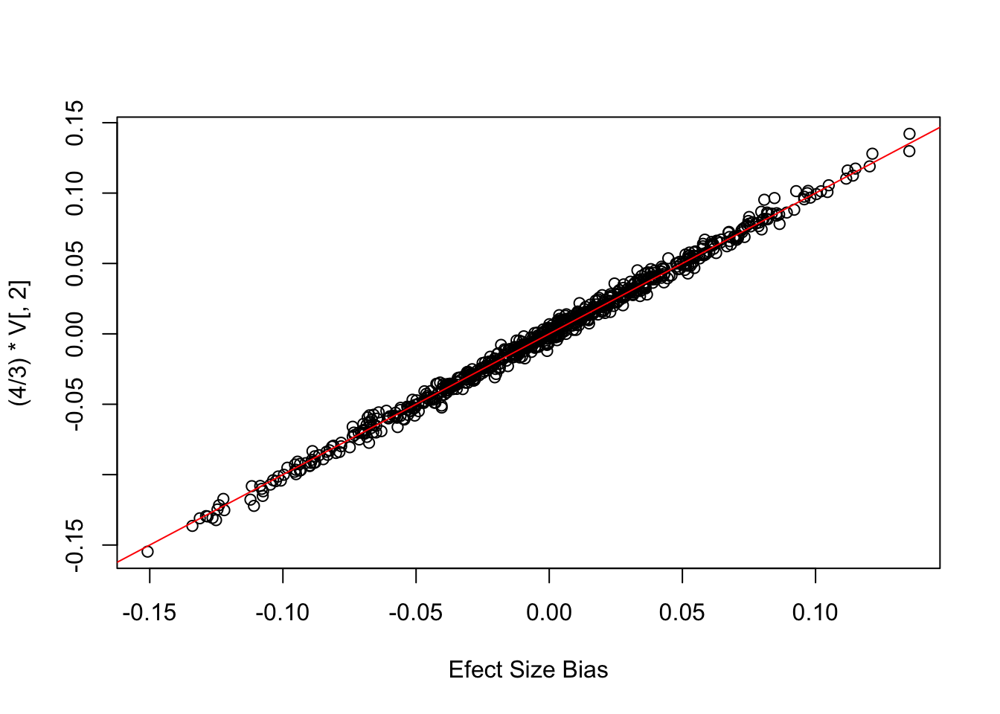

Last updated: 2022-05-31
Checks: 7 0
Knit directory: polygenic_adaptation_stratification/analysis/
This reproducible R Markdown analysis was created with workflowr (version 1.6.2). The Checks tab describes the reproducibility checks that were applied when the results were created. The Past versions tab lists the development history.
Great! Since the R Markdown file has been committed to the Git repository, you know the exact version of the code that produced these results.
Great job! The global environment was empty. Objects defined in the global environment can affect the analysis in your R Markdown file in unknown ways. For reproduciblity it’s best to always run the code in an empty environment.
The command set.seed(20201015) was run prior to running the code in the R Markdown file. Setting a seed ensures that any results that rely on randomness, e.g. subsampling or permutations, are reproducible.
Great job! Recording the operating system, R version, and package versions is critical for reproducibility.
Nice! There were no cached chunks for this analysis, so you can be confident that you successfully produced the results during this run.
Great job! Using relative paths to the files within your workflowr project makes it easier to run your code on other machines.
Great! You are using Git for version control. Tracking code development and connecting the code version to the results is critical for reproducibility.
The results in this page were generated with repository version 247a59f. See the Past versions tab to see a history of the changes made to the R Markdown and HTML files.
Note that you need to be careful to ensure that all relevant files for the analysis have been committed to Git prior to generating the results (you can use wflow_publish or wflow_git_commit). workflowr only checks the R Markdown file, but you know if there are other scripts or data files that it depends on. Below is the status of the Git repository when the results were generated:
Ignored files:
Ignored: .DS_Store
Ignored: .Rhistory
Ignored: .Rproj.user/
Ignored: .snakemake/
Ignored: analysis/Calculate_TGWAS_cache/
Ignored: analysis/Polygenic_Selection_Test_cache/
Ignored: code/.DS_Store
Ignored: code/1kg/.DS_Store
Ignored: code/Calculate_Tm/.DS_Store
Ignored: code/Debug/.DS_Store
Ignored: code/PGA_test/.DS_Store
Ignored: code/PRS/.DS_Store
Ignored: code/Simulate_Genotypes/.DS_Store
Ignored: code/Simulate_Phenotypes/.DS_Store
Ignored: code/Snakefiles/.DS_Store
Ignored: code/Snakefiles/4PopSplit/.DS_Store
Ignored: code/Snakefiles/4PopSplit/Signal/
Ignored: code/Snakefiles/SimpleGrid/.snakemake/conda-archive/
Ignored: code/Snakefiles/SimpleGrid/.snakemake/conda/
Ignored: code/Snakefiles/SimpleGrid/.snakemake/locks/
Ignored: code/Snakefiles/SimpleGrid/.snakemake/metadata/
Ignored: code/Snakefiles/SimpleGrid/.snakemake/shadow/
Ignored: code/Snakefiles/SimpleGrid/.snakemake/singularity/
Ignored: data/.DS_Store
Ignored: data/1kg/
Ignored: data/cgd_example/
Ignored: data/projection_example/
Ignored: data/proof/
Ignored: output/.DS_Store
Ignored: output/Calculate_TGWAS/
Ignored: output/Calculate_Tm/4PopSplit/
Ignored: output/Calculate_Tm/SimpleGrid/A1/
Ignored: output/Calculate_Tm/SimpleGrid/B1/
Ignored: output/Calculate_Tm/SimpleGrid/E1/
Ignored: output/Calculate_Tm/SimpleGrid/E2/
Ignored: output/Calculate_Tm/SimpleGrid/E3/
Ignored: output/Calculate_Tm/SimpleGrid/E4/
Ignored: output/Calculate_Tm/SimpleGrid/E5/
Ignored: output/PGA_test/
Ignored: output/PRS/
Ignored: output/Run_GWAS/
Ignored: output/Simulate_Genotypes/.DS_Store
Ignored: output/Simulate_Genotypes/4PopSplit/
Ignored: output/Simulate_Genotypes/SimpleGrid/A1/
Ignored: output/Simulate_Genotypes/SimpleGrid/A2/
Ignored: output/Simulate_Genotypes/SimpleGrid/A20/
Ignored: output/Simulate_Genotypes/SimpleGrid/E1/
Ignored: output/Simulate_Genotypes/SimpleGrid/E2/
Ignored: output/Simulate_Genotypes/SimpleGrid/E3/
Ignored: output/Simulate_Genotypes/SimpleGrid/E4/
Ignored: output/Simulate_Genotypes/SimpleGrid/E5/
Ignored: output/Simulate_Genotypes/SimpleGrid/E6/
Ignored: output/Simulate_Genotypes/SimpleGrid/E7/
Ignored: output/Simulate_Genotypes/SimpleGrid/E8/
Ignored: output/Simulate_Genotypes/SimpleGrid/S1/
Ignored: output/Simulate_Phenotypes/
Unstaged changes:
Modified: analysis/Simulation_Methods_Reproducible.Rmd
Note that any generated files, e.g. HTML, png, CSS, etc., are not included in this status report because it is ok for generated content to have uncommitted changes.
These are the previous versions of the repository in which changes were made to the R Markdown (analysis/Correction.Rmd) and HTML (docs/Correction.html) files. If you’ve configured a remote Git repository (see ?wflow_git_remote), click on the hyperlinks in the table below to view the files as they were in that past version.
| File | Version | Author | Date | Message |
|---|---|---|---|---|
| Rmd | 856b317 | jgblanc | 2022-05-26 | shift snakefiles |
| html | 856b317 | jgblanc | 2022-05-26 | shift snakefiles |
| Rmd | 4202c87 | jgblanc | 2022-05-12 | push website |
make_genotype_matrix <- function(p, n, L) {
G <- matrix(NA, nrow = n, ncol = L)
for (i in 1:length(p)) {
G[,i] <- rbinom(n,2,p[i])
}
return(G)
}
# 3 populations ((A,B),C)
sim_evo <- function(m, n, L) {
# Draw alleles from Beta
p_start <- rbeta(L, 1,1)
# Evolve alleles to first split via drift
p1 <- p_start + rnorm(L, 0, sqrt((p_start)*(1-p_start)* 0.1))
p2 <- p_start + rnorm(L, 0, sqrt((p_start)*(1-p_start)* 0.1))
rm <- which(p1 < 0 | p1 > 1 | p2 < 0 | p2 > 1)
if (length(rm) > 0) {
p1 <- p1[-rm]
p2 <- p2[-rm]
}
L <- length(p1)
# Evolve A,B alleles to second split via drift
pA <- p1 + rnorm(L, 0, sqrt((p1)*(1-p1)* 0.05))
pB <- p1 + rnorm(L, 0, sqrt((p1)*(1-p1)* 0.05))
# Evolve C, DE alleles
pD <- p2 + rnorm(L, 0, sqrt((p2)*(1-p2)* 0.1))
pCE <- p2 + rnorm(L, 0, sqrt((p2)*(1-p2)* 0.05))
rm <- which(pCE < 0 | pCE > 1 )
if (length(rm) > 0) {
pCE <- pCE[-rm]
pA <- pA[-rm]
pB <- pB[-rm]
pD <- pD[-rm]
}
L <- length(pCE)
pC <- pCE + rnorm(L, 0, sqrt((pCE)*(1-pCE)* 0.05))
pE <- pCE + rnorm(L, 0, sqrt((pCE)*(1-pCE)* 0.05))
# Remove fixed/lost alleles
rm <- which(pA < 0 | pA > 1 | pB < 0 | pB > 1 | pC < 0 | pC > 1 | pD < 0 | pD > 1 | pE < 0 | pE > 1)
if (length(rm) > 0) {
pA <- pA[-rm]
pB <- pB[-rm]
pC <- pC[-rm]
pD <- pD[-rm]
pE <- pE[-rm]
}
# Make genotype matrix by drawing from population
iA <- make_genotype_matrix(pA, m/3, length(pA))
iB <- make_genotype_matrix(pB, m/3, length(pB))
iC <- make_genotype_matrix(pC, m/3, length(pC))
iD <- make_genotype_matrix(pD, n/2, length(pD))
iE <- make_genotype_matrix(pE, n/2, length(pE))
# GWAS Gentotype Matrix
G <- rbind(iA, iB, iC)
# Test Genotype Matrix
X <- rbind(iD, iE)
# Get rid of fixed sites
rmG <- which(colSums(G) == 0 | colSums(G) == 2*m)
rmX <- which(colSums(X) == 0 | colSums(X) == 2*n)
rm <- c(rmG, rmX)
if (length(rmG) > 0) {
G <- G[,-rm]
X <- X[,-rm]
}
return(list(G,X))
}# Evolutionary simulation
set.seed(12)
out <- sim_evo(m=300, n=200, L=1000)
G <- out[[1]]
X <- out[[2]]
L <- ncol(G)
m <- nrow(G)
n <- nrow(X)
# Get resulting allele frequencies
## GWAS
pA <- colMeans(G[1:100,])/2
pB <- colMeans(G[101:200,])/2
pC <- colMeans(G[201:300,])/2
pAB <- colMeans(G[1:200,])/2
p <- colMeans(G)/2
## Test
pD <- colMeans(X[1:100,])/2
pE <- colMeans(X[101:200,])/2
# Confounder ((1,0),-1)
dA <- 1
dB <- 0
dC <- -1
E <- c(rep(dA,m/3), rep(dB,m/3), rep(dC,m/3))
# Test Vector (0.5, -0.5)
Tvec <- c(rep(1, n/2), rep(-1, n/2))GWAS model:
\[\vec{y} \sim \beta_{\ell}\vec{g}_{\ell}\]
Effect size bias: \[\frac{Cov(\vec{E}, \vec{g}_{\ell})}{Var(\vec{g}_{\ell})} = \frac{1}{N} \frac{\vec{E}^T\vec{g}_{\ell}}{Var(g_{\ell})} = \frac{\frac{2}{3}(p_{AB} - p_{c})+ \frac{1}{3}(p_A -p_B)}{Var(\vec{g}_{\ell})}\]
Selection test bias:
\[\tilde{F}_4 = c E[(\frac{2}{3}(p_{AB} - p_{c})+ \frac{1}{3}(p_A -p_B))(p_D - p_E)] \neq 0\]
# Single site effect size bias
(1/(m)) *(t(E) %*% G[,1]) [,1]
[1,] -0.09((2/3)*(pAB[1] - pC[1])) + ((1/3)*(pA[1] -pB[1]))[1] -0.09# Compare effect size bias across sites
covBias <- (1/(m)) *(t(E) %*% G)
plot(covBias[1,],((2/3)*(pAB - pC)) + ((1/3)*(pA -pB)), xlab = "Effect Size Bias")
abline(0,1, col = "red")
| Version | Author | Date |
|---|---|---|
| 856b317 | jgblanc | 2022-05-26 |
# Calculate Selection Test Bias at single site
((1/(m)) *(t(E) %*% G[,1])) * ((1/n) * (Tvec %*% X[,1])) [,1]
[1,] -0.01035(((2/3)*(pAB[1] - pC[1])) + ((1/3)*(pA[1] -pB[1]))) * (pD[1] - pE[1])[1] -0.01035# Selection test biast across sites (using correlation)
cor((((2/3)*(pAB - pC)) + ((1/3)*(pA -pB))), (pD - pE))[1] 0.1229253GWAS model:
\[\vec{y} \sim \beta_{\ell}\vec{g}_{\ell} + \vec{v}\]
Covariate: \[\vec{v} = \frac{I(A \rightarrow 1, B \rightarrow 1, C \rightarrow -2)}{||\vec{v}||}\]
\[P = I - \vec{v}\vec{v}^T\]
Effect size bias: \[\frac{Cov(\vec{PE}, \vec{Pg}_{\ell})}{Var(\vec{Pg}_{\ell})} = \frac{1}{N} \frac{(P\vec{E})^T(P\vec{g}_{\ell})}{Var(g_{\ell})} = \frac{\frac{1}{3}(p_A -p_B)}{Var(P\vec{g}_{\ell})}\]
Selection test bias:
\[\tilde{F}_4 = c E[(\frac{1}{3}(p_A -p_B)(p_D - p_E)] = 0\]
# Make covariate
cA <- 1
cB <- 1
cC <- -2
v <- c(rep(cA,m/3), rep(cB,m/3), rep(cC,m/3))
v <- v / sqrt(sum(v^2))
# Make annihilator
P <- diag(rep(1, length(v))) - (v %*% t(v))
# Single site
(1/(m)) * ( t(P %*% E) %*% (P %*% G[,1])) [,1]
[1,] 0.01333333((1/3)*(pA[1] -pB[1]))[1] 0.01333333# Compare across sites
covBias <- (1/(m)) * ( t(P %*% E) %*% (P %*% G))
plot(covBias[1,],(1/3)*(pA -pB), xlab = "Effect Size Bias")
abline(0,1, col = "red")
| Version | Author | Date |
|---|---|---|
| 856b317 | jgblanc | 2022-05-26 |
# Calculate Selection Test Bias at single site
((1/(m)) * ( t(P %*% E) %*% (P %*% G[,1]))) * ((1/n) * (Tvec %*% X[,1])) [,1]
[1,] 0.001533333((1/3)*(pA[1] -pB[1])) * (pD[1] - pE[1])[1] 0.001533333# Selection test biast across sites
cor(((1/3)*(pA -pB)), (pD - pE))[1] 0.02657899GWAS model:
\[\vec{y} \sim \beta_{\ell}\vec{g}_{\ell} + \vec{v}\]
Covariate: \[\vec{v} = \frac{I(A \rightarrow -1, B \rightarrow 1, C \rightarrow 0)}{||\vec{v}||}\]
\[P = I - \vec{v}\vec{v}^T\]
Effect size bias: \[\frac{Cov(\vec{PE}, \vec{Pg}_{\ell})}{Var(\vec{Pg}_{\ell})} = \frac{1}{N} (P\vec{E})^T(P\vec{g}_{\ell}) = \frac{\frac{2}{3}(p_{AB} - p_{c})}{Var(P\vec{g}_{\ell})}\]
Selection test bias:
\[\tilde{F}_4 = c E[(\frac{2}{3}(p_{AB} - p_{c})(p_D - p_E)] \neq 0\]
# Make covariate
cA <- -1
cB <- 1
cC <- 0
v <- c(rep(cA,m/3), rep(cB,m/3), rep(cC,m/3))
v <- v / sqrt(sum(v^2))
# Make annihilator
P <- diag(rep(1, length(v))) - (v %*% t(v))
# Single site
(1/(m)) * ( t(P %*% E) %*% (P %*% G[,1]) ) [,1]
[1,] -0.1033333((2/3)*(pAB[1] -pC[1]))[1] -0.1033333# Compare across sites
covBias <- (1/(m)) * ( t(P %*% E) %*% (P %*% G))
plot(covBias[1,],(2/3)*(pAB -pC), xlab = "Effect size bias")
abline(0,1, col = "red")
| Version | Author | Date |
|---|---|---|
| 856b317 | jgblanc | 2022-05-26 |
# Calculate Selection Test Bias at single site
((1/(m)) * ( t(P %*% E) %*% (P %*% G[,1]) )) * ((1/n) * (Tvec %*% X[,1])) [,1]
[1,] -0.01188333((2/3)*(pAB[1] -pC[1])) * (pD[1] - pE[1])[1] -0.01188333# Selection test biast across sites
cor(((2/3)*(pAB -pC)), (pD - pE))[1] 0.1199739When using a mean-centered matrix I think (???), \[V_{\ell,1} \stackrel{?}{=} \frac{(p_{AB} - p_C)}{c1}\] \[V_{\ell, 2} \stackrel{?}{=} \frac{p_A - p_B}{4}\]
# Do SVD
mySVD <- svd(scale(G,scale = F))
V <- mySVD$v
U <- mySVD$u
S <- diag(mySVD$d)# Compare loadings to frequency contrasts - PC 1
mod <- lm((pAB - pC) ~ V[,1])
c1 <- 1 / coef(mod)[2]
# Single site
V[1,1][1] 0.02387806c1 *(pAB[1] - pC[1]) V[, 1]
0.02388008 # Compate across sites
plot(V[,1],c1 * (pAB - pC))
abline(0,1, col = "red")
| Version | Author | Date |
|---|---|---|
| 856b317 | jgblanc | 2022-05-26 |
# Compare loadings to frequency contrasts - PC 2
# Single site
V[1,2][1] 0.010934620.25 * (pA[1] - pB[1])[1] 0.01# Compate across sites
plot(V[,2],0.25 * (pA - pB))
abline(0,1, col = "red")
| Version | Author | Date |
|---|---|---|
| 856b317 | jgblanc | 2022-05-26 |
For the test panel: \[V^X_{\ell,1} \stackrel{?}{=} \frac{(p_{D} - p_E)}{c2}\]
# Do SVD
mySVD_Test <- svd(scale(X,scale = F))
Vx <- mySVD_Test$v
Ux <- mySVD_Test$u
Sx <- diag(mySVD_Test$d)# Compare loadings to frequency contrasts - PC 1
mod <- lm((pD - pE) ~ Vx[,1])
c2 <- 1 / coef(mod)[2]
# Single site
Vx[1,1][1] -0.02188635c2 *(pD[1] - pE[1]) Vx[, 1]
-0.02333607 # Compate across sites
plot(Vx[,1],c2 * (pD - pE))
abline(0,1, col = "red")
| Version | Author | Date |
|---|---|---|
| 856b317 | jgblanc | 2022-05-26 |
GWAS model:
\[\vec{y} \sim \beta_{\ell}\vec{g}_{\ell}\]
Effect size bias: \[\frac{Cov(\vec{E}, \vec{g}_{\ell})}{Var(\vec{g}_{\ell})} = \frac{1}{N} \vec{E}^T\vec{g}_{\ell} = \frac{\frac{2}{3}(p_{AB} - p_{c})+ \frac{1}{3}(p_A -p_B)}{Var(\vec{g}_{\ell})} \stackrel{?}{=} \frac{\frac{2c_1}{3}V_{\ell,1} + \frac{4}{3} V_{\ell,2} }{Var(g_{\ell})}\]
Selection test bias:
\[\tilde{F}_4 = c E[(\frac{2}{3}(p_{AB} - p_{c})+ \frac{1}{3}(p_A -p_B))(p_D - p_E)] \neq 0\]
\[\tilde{F}_4 = c E[(\frac{2c_1}{3}V_{1,\ell}+ \frac{4}{3}V_{2,\ell)}(c_2V^X_{1,\ell})] \neq 0\]
# Single site
(1/(m)) *(t(E) %*% G[,1]) [,1]
[1,] -0.09((2/3)*(pAB[1] - pC[1])) + ((1/3)*(pA[1] -pB[1]))[1] -0.09((2/3)*V[1,1] / c1) + (4/3)*(V[1,2]) V[, 1]
-0.0887451 # Compare across sites
covBias <- (1/(m)) *(t(E) %*% G)
plot(covBias[1,],((2/3)*V[,1] / c1) + (4/3)*(V[,2]), xlab = "Effect Size Bias")
abline(0,1, col = "red")
| Version | Author | Date |
|---|---|---|
| 856b317 | jgblanc | 2022-05-26 |
# Calculate Selection Test Bias at single site
((1/(m)) *(t(E) %*% G[,1])) * ((1/n) * (Tvec %*% X[,1])) [,1]
[1,] -0.01035(((2/3)*V[1,1]/c1) + (4/3)*(V[1,2])) * (Vx[1,1] / c2) V[, 1]
-0.009571673 # Selection test biast across sites
cor(((2/3)*V[,1]/c1) + ((4/3)*V[,2]), (Vx[,1] / c2))[1] 0.1217805GWAS model:
\[\vec{y} \sim \beta_{\ell}\vec{g}_{\ell} + \vec{U}_1\]
Annihilator: \[P = I - \vec{U}_1\vec{U}_1^T\]
Effect size bias: \[\frac{Cov(\vec{PE}, \vec{Pg}_{\ell})}{Var(\vec{Pg}_{\ell})} = \frac{1}{N} (P\vec{E})^T(P\vec{g}_{\ell}) = \frac{\frac{1}{3}(p_A -p_B)}{Var(P\vec{g}_{\ell})} \stackrel{?}{=} \frac{\frac{-4}{3}V_{2,\ell}}{Var(P\vec{g}_{\ell})}\]
Selection test bias:
\[\tilde{F}_4 = c E[\frac{4c_2}{3}V_{2,\ell}V^X_{1,\ell}] = 0\]
# Make covariate
v <- U[,1]
# Make annihilator
P <- diag(rep(1, length(v))) - (v %*% t(v))
# Single site
(1/(m)) * ( t(P %*% E) %*% (P %*% G[,1])) [,1]
[1,] 0.01278647((1/3)*(pA[1] -pB[1]))[1] 0.01333333(4/3)* V[1,2][1] 0.0145795# Compare across sites - frequency contrast
covBias <- (1/(m)) * ( t(P %*% E) %*% (P %*% G))
plot(covBias[1,],(1/3)*(pA -pB), xlab = "Effect Size Bias")
abline(0,1, col = "red")
| Version | Author | Date |
|---|---|---|
| 856b317 | jgblanc | 2022-05-26 |
# Compare across sites - PC loading
covBias <- (1/(m)) * ( t(P %*% E) %*% (P %*% G))
plot(covBias[1,],(4/3)* V[,2], xlab = "Efect Size Bias")
abline(0,1, col = "red")
| Version | Author | Date |
|---|---|---|
| 856b317 | jgblanc | 2022-05-26 |
# Calculate Selection Test Bias at single site
((1/(m)) * (t(P %*% E) %*% (P %*% G[,1]))) * ((1/n) * (Tvec %*% X[,1])) [,1]
[1,] 0.001470444((4/3)*(V[1,2]) ) * (Vx[1,1] / c2) Vx[, 1]
0.001572483 # Selection test biast across sites
cor((4/3)*(V[,2]) , (Vx[,1] / c2))[1] 0.03079819GWAS model:
\[\vec{y} \sim \beta_{\ell}\vec{g}_{\ell} + \vec{U}_1\]
Annihilator: \[P = I - \vec{U}_2\vec{U}_2^T\]
Effect size bias: \[\frac{Cov(\vec{PE}, \vec{Pg}_{\ell})}{Var(\vec{Pg}_{\ell})} = \frac{1}{N} (P\vec{E})^T(P\vec{g}_{\ell}) = \frac{\frac{2}{3}(p_{AB} -p_C)}{Var(P\vec{g}_{\ell})} \stackrel{?}{=} \frac{\frac{2c_1}{3}V_{1,\ell}}{Var(P\vec{g}_{\ell})}\]
Selection test bias:
\[\tilde{F}_4 = c E[\frac{2c_1c_2}{3}V_{1,\ell}V^X_{1,\ell}] \neq 0\]
# Make covariate
v <- U[,2]
# Make annihilator
P <- diag(rep(1, length(v))) - (v %*% t(v))
# Single site
(1/(m)) * ( t(P %*% E) %*% (P %*% G[,1])) [,1]
[1,] -0.1043671((2/3)*(pAB[1] -pC[1]))[1] -0.1033333(2/3)* V[1,1] * (1/c1) V[, 1]
-0.1033246 # Compare across sites - frequency contrast
covBias <- (1/(m)) * ( t(P %*% E) %*% (P %*% G))
plot(covBias[1,],(2/3)*(pAB -pC))
abline(0,1, col = "red")
| Version | Author | Date |
|---|---|---|
| 856b317 | jgblanc | 2022-05-26 |
# Compare across sites - PC loading
covBias <- (1/(m)) * ( t(P %*% E) %*% (P %*% G))
plot(covBias[1,],(2/3)* V[,1] / c1)
abline(0,1, col = "red")
| Version | Author | Date |
|---|---|---|
| 856b317 | jgblanc | 2022-05-26 |
# Calculate Selection Test Bias at single site
((1/(m)) * ( t(P %*% E) %*% (P %*% G[,1]))) * ((1/n) * (Tvec %*% X[,1])) [,1]
[1,] -0.01200222((2/3)* V[1,1] / c1) * (Vx[1,1] / c2) V[, 1]
-0.01114416 # Selection test biast across sites
cor((2/3)* V[,1] / c1, (Vx[,1]/c2))[1] 0.1179939GWAS model:
\[\vec{y} \sim \beta_{\ell}\vec{g}_{\ell} + \vec{T}^{GWAS}\]
Annihilator: \[P = I - \vec{T}^{GWAS}\vec{T}^{GWAS'}\]
Effect size bias: \[\frac{Cov(\vec{PE}, \vec{Pg}_{\ell})}{Var(\vec{Pg}_{\ell})} \stackrel{?}{=} \frac{1}{N} (P\vec{E})^T(P\vec{g}_{\ell}) = \frac{\frac{1}{3}(p_A -p_B)}{Var(P\vec{g}_{\ell})} \stackrel{?}{=} \frac{\frac{4}{3}V_{2,\ell}}{Var(P\vec{g}_{\ell})}\]
Selection test bias:
\[\tilde{F}_4 = c E[\frac{4}{3}V_{2,\ell}V^X_{1,\ell}] = 0\]
# Calculate TGWAS
Gs <- scale(G)
Xs <- scale(X)
TGWAS <- Gs %*% t(Xs) %*% solve(Xs %*% t(Xs)) %*% Tvec
# Make covariate
v <- TGWAS / norm(TGWAS, "2")
plot(v)
| Version | Author | Date |
|---|---|---|
| 856b317 | jgblanc | 2022-05-26 |
# Make annihilator
P <- diag(rep(1, length(v))) - (v %*% t(v))
# Single site
(1/(m)) * ( t(P %*% E) %*% (P %*% G[,1])) [,1]
[1,] -0.03928196((1/3)*(pA[1] -pB[1]))[1] 0.01333333(4/3)* V[1,2][1] 0.0145795# Compare across sites - frequency contrast
covBias <- (1/(m)) * ( t(P %*% E) %*% (P %*% G))
plot(covBias[1,],(1/3)*(pA -pB), xlab = "Effect Size Bias")
abline(0,1, col = "red")
| Version | Author | Date |
|---|---|---|
| 856b317 | jgblanc | 2022-05-26 |
# Compare across sites - PC loading
covBias <- (1/(m)) * ( t(P %*% E) %*% (P %*% G))
plot(covBias[1,],(4/3)* V[,2], xlab = "Efect Size Bias")
abline(0,1, col = "red")
| Version | Author | Date |
|---|---|---|
| 856b317 | jgblanc | 2022-05-26 |
# Calculate Selection Test Bias at single site
((1/(m)) * (t(P %*% E) %*% (P %*% G[,1]))) * ((1/n) * (Tvec %*% X[,1])) [,1]
[1,] -0.004517426((4/3)*(V[1,2]) ) * (Vx[1,1] / c2) Vx[, 1]
0.001572483 # Selection test biast across sites
cor((4/3)*(V[,2]) , (Vx[,1] / c2))[1] 0.03079819
sessionInfo()R version 3.6.2 (2019-12-12)
Platform: x86_64-apple-darwin15.6.0 (64-bit)
Running under: macOS High Sierra 10.13.6
Matrix products: default
BLAS: /Library/Frameworks/R.framework/Versions/3.6/Resources/lib/libRblas.0.dylib
LAPACK: /Library/Frameworks/R.framework/Versions/3.6/Resources/lib/libRlapack.dylib
locale:
[1] en_US.UTF-8/en_US.UTF-8/en_US.UTF-8/C/en_US.UTF-8/en_US.UTF-8
attached base packages:
[1] stats graphics grDevices utils datasets methods base
other attached packages:
[1] pracma_2.3.3 workflowr_1.6.2
loaded via a namespace (and not attached):
[1] Rcpp_1.0.7 whisker_0.4 knitr_1.37 magrittr_2.0.1
[5] R6_2.5.1 rlang_0.4.12 fastmap_1.1.0 fansi_0.5.0
[9] highr_0.9 stringr_1.4.0 tools_3.6.2 xfun_0.29
[13] utf8_1.2.2 git2r_0.28.0 jquerylib_0.1.4 htmltools_0.5.2
[17] ellipsis_0.3.2 rprojroot_2.0.2 yaml_2.2.1 digest_0.6.29
[21] tibble_3.1.6 lifecycle_1.0.1 crayon_1.4.2 later_1.3.0
[25] sass_0.4.0 vctrs_0.3.8 promises_1.2.0.1 fs_1.5.2
[29] glue_1.6.0 evaluate_0.14 rmarkdown_2.10 stringi_1.7.6
[33] bslib_0.3.0 compiler_3.6.2 pillar_1.6.4 jsonlite_1.7.2
[37] httpuv_1.6.2 pkgconfig_2.0.3